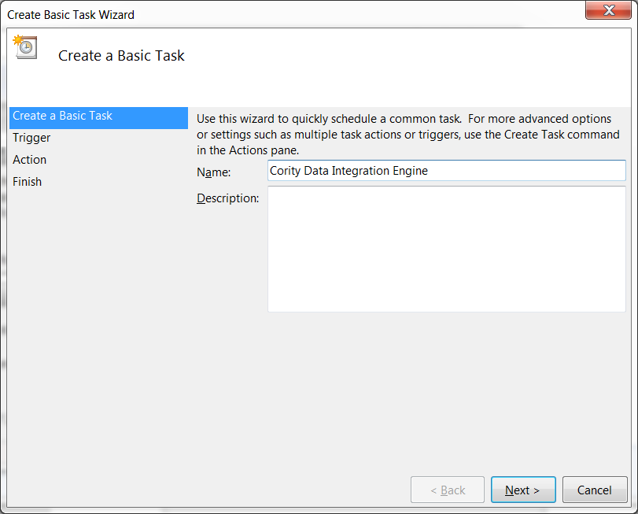
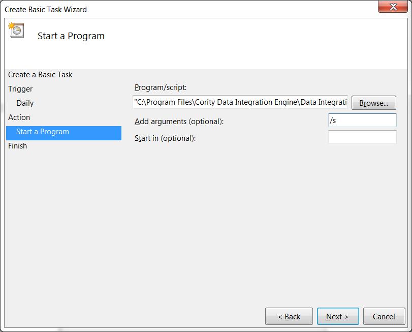

To schedule the Data Integration Utility you must first run the client manually and save the required configuration. Once this has been done the Data Integration Utility can be scheduled to run automatically using the previously saved configuration. Note that the file that was selected when the configuration was saved will be used during any scheduled imports. This file should be updated with new data for each scheduled import.
Important: If you have updated the Data Integration Utility web client from GX2t or earlier to GX2u or later, you must update the Program/Script field of your scheduled task to reference the new executable filename (.exe), because that filename has changed.
Select Create Basic Task. The Create Basic Task Wizard will open.
Enter a name and description (optional) for the task.

Click Next.
Select when you want the task to start.
Click Next.
If you selected Daily, Weekly, Monthly, or One time in the Trigger step, select a start date and time and specify when you want future tasks to run, if applicable. Click Next.
If you selected When a specific event is logged in the Trigger step, select a Log and Source and enter an Event ID. Click Next.
In the Action step, select Start a program.
Click Next.
In the Start a Program step, click the Browse… button next to the Program/script field. Locate Data Integration Utility.exe.
Type “/s” in the Add arguments field. This will instruct the client to automatically run in silent mode without any user interaction.

Click Next.
Review your settings and click Finish to create your Data Integration Utility task. The Windows Task Scheduler will automatically start the Data Integration Utility per your specifications.